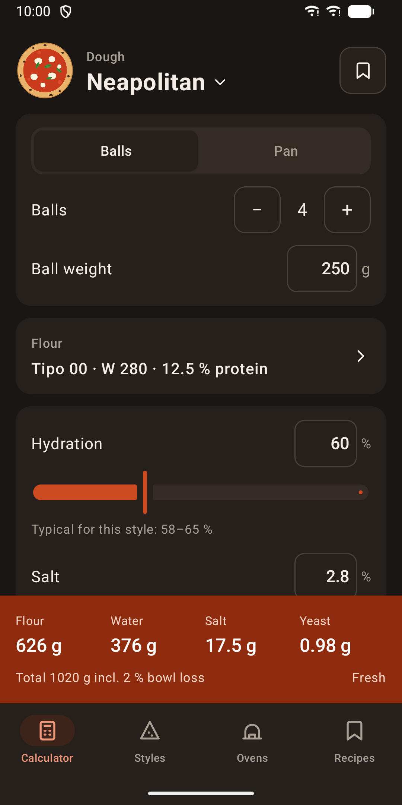

Pizza Calc: Teigrechner
Pizzateig in Gramm: 16 Stile, Hefe für jeden Zeitplan, Vorteige.




Über die App
Pizza Calc macht aus der Pizza, die du backen willst, genaue Grammangaben. Wähle einen Stil, lege Größe und Gärzeiten fest, und die App sagt dir, wie viel Mehl, Wasser, Salz, Hefe, Öl und Zucker du brauchst. STILE Starte mit einer von 16 Vorlagen: neapolitanisch, contemporanea, New York, römisch, Pinsa, Teglia, Detroit, sizilianisch, Grandma, Chicago Deep Dish, Tavern, New Haven, California, Pfannenpizza, Focaccia und glutenfrei. Ein Stil füllt den Rechner mit typischen Werten und gibt dir einen kurzen Tipp. Suche und filtere nach rund, Blech, Fladenbrot oder glutenfrei. BÄCKERPROZENTE Stelle Hydration, Salz, Öl und Zucker mit Schiebereglern ein. Plane Teiglinge (Anzahl und Gewicht) oder Bleche (rund oder eckig, mit Größe und Teigdicke). Der Schüsselverlust wird draufgerechnet, damit am Ende nichts fehlt. HEFE FÜR DEINEN ZEITPLAN Gib bis zu sechs Phasen mit Stunden und Temperatur ein, zum Beispiel ein paar Stunden bei Raumtemperatur und zwei Tage im Kühlschrank. Die App berechnet die Hefemenge für Frischhefe, Trockenhefe oder Instanthefe oder schlägt eine Menge Sauerteig vor. Du kannst den Wert von Hand ändern und jederzeit zurück auf automatisch stellen. Ein Hinweis erscheint, wenn eine Phase außerhalb des Bereichs liegt, in dem das Modell am genauesten ist. VORTEIGE Arbeite mit Poolish, Biga oder Sauerteig, lege Mehlanteil und Hydration fest und erhalte den Teig in zwei klaren Schritten: Vorteig und Hauptteig. MEHLMISCHUNGEN UND WASSERTEMPERATUR Mische bis zu vier von 12 Mehlsorten und sieh Stärke (W) und Protein der Mischung. Die App schlägt außerdem die Wassertemperatur für deine Zielteigtemperatur, die Raumtemperatur und die Knetmethode vor. ÖFEN Wähle aus neun Öfen, vom Holzofen bis zum Backofen mit Pizzastahl oder Kugelgrill. Sieh Hitze, Vorheizzeit und Backzeit und übernimm passende Teiganpassungen für deinen Ofen mit einem Tipp. REZEPTE Speichere, benenne, dupliziere und durchsuche deine Rezepte. Exportiere sie in eine Sicherungsdatei und importiere sie wieder. Dein aktueller Teig wird automatisch gespeichert, und ein Widget zeigt ihn auf dem Startbildschirm. AUSSERDEM Metrische oder imperiale Einheiten, helles und dunkles Design, Deutsch und Englisch. Pizza Calc funktioniert komplett offline. Kein Konto, keine Werbung, kein Tracking. Deine Rezepte bleiben auf deinem Handy.